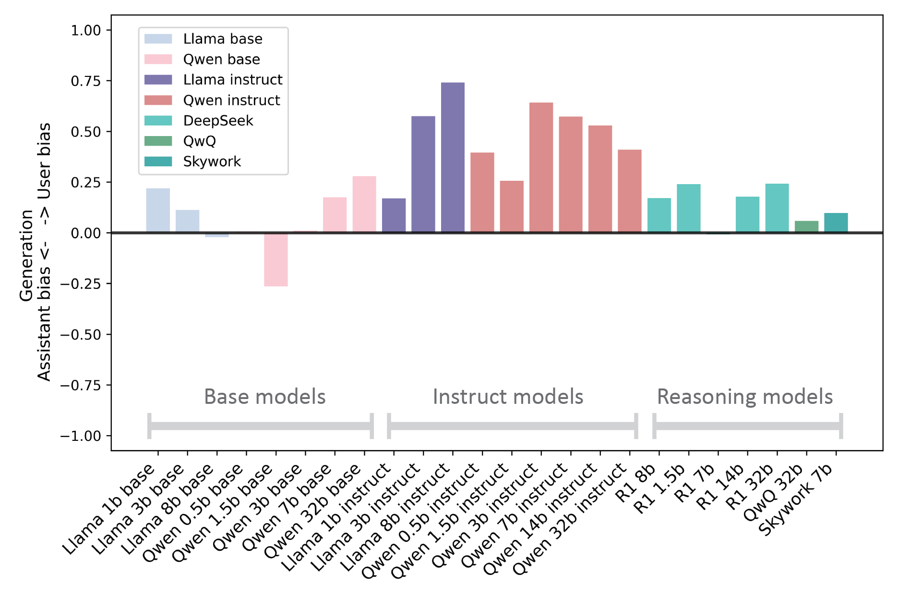
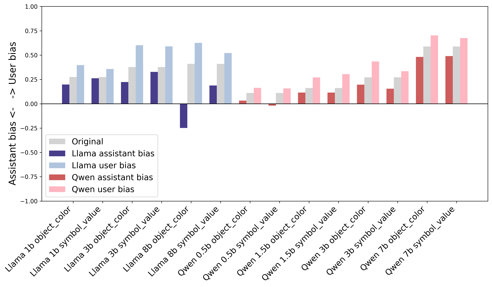

Large language models (LLMs) can bias towards relying on their own or the user’s information in chat history, leading to overly stubborn or agreeable behaviors in multi‑turn conversations. In this paper, we formalize this model characteristic as user–assistant bias and introduce an 8k multi-turn conversation dataset UserAssist, which we use to benchmark, understand and manipulate the user–assistant bias in frontier LLMs. Leveraging UserAssist-test, we first benchmark the user-assistant bias of 26 commercial and 26 open‑weight models. Commercial models show various levels of user bias. Evaluation on open-weight models reveals significant user bias in the instruction-tuned models, and weak user bias in reasoning (or reasoning-distilled) models. We then perform controlled fine‑tuning experiments to pinpoint the post-training recipe contributing to these bias shifts: human preference alignment increases user bias, while training on chain‑of‑thought reasoning traces decreases it. Finally, we demonstrate that user-assistant bias can be bidirectionally adjusted by performing direct preference optimization (DPO) on UserAssist-train, and generalizes well to both in-domain and out-of-domain conversations. Our results provide insights into how the LLM integrates information from different sources, and also a viable way to detect and control model abnormalities.
The Concept of User-Assistant Bias
Real conversations with LLMs are multi-turn, and each new model generation depends on both what the user said and what the assistant previously wrote. When a model overweights its own history, it can double-down on mistakes; when it overweights the user, it can become overly agreeable and reinforce errors—both risky in high-stakes tasks. Prior reports of "stubborn" vs. "sycophantic" behavior are often confounded by how much information sits on each side of the chat history. Therefore, we create a novel concept-user–assistant bias: the degree to which a model's next response is pulled toward the user's words versus its own prior messages when given balanced, conflicting context. Measuring and reducing this bias is key to building assistants that collaborate, correct, and reason responsibly.
Introducing UserAssist
USERASSIST is a synthetic multi-turn dialogue dataset for probing user–assistant bias. It consists of two subsets, Symbol–Value and Object–Color, which capture the bias in an information symmetric and symbolic manner: in the first, the user and assistant alternate assigning numeric values (0–100) to letter variables; in the second, they alternate attributing colors to objects. In every conversation the user and assistant disagree on the same entities, creating conflicting information across windows. To eliminate position effects, the dataset is balanced so that an equal number of conversations end with the user's assignment and the assistant's assignment. Each conversation is followed by a query asking for the entity's attribute, yielding a clean evaluation point. In total, USERASSIST includes 8,004 conversations.
All the conversations are divided into two splits: train and test.
test: 2,988 conversations for standard evaluation.
1,946 Symbol–Value dialogues with 1–5 turns.
1,042 Object–Color dialogues with 1–3 turns.
Each dialogue ends with a question about the entity's attribute appearing in the conversation.
train: 5,016 conversations for fine-tuning (maintains the same subset ratio as test).
Earlier series—Claude-3 and GPT-4o/4 variants—show strong user-leaning bias, peaking around +0.8 (notably GPT-4o and GPT-4.1), while more recent variants—Claude-4 and GPT-5—show little to no bias. Models from DeepSeek, Google, and xAI are broadly balanced. Across vendors, reasoning-focused variants (e.g., Claude 3.7 Sonnet, Claude 4 Sonnet, o1 preview, o4 mini, DeepSeek Reasoner, Gemini 2.5 Flash Preview, Grok 3 Mini) exhibit minimal bias.
Benchmarking Open-Weight Models

Open‑weight models
We also evaluate 26 open-weight models. In these models, instruction‑tuned variants display strong user bias, whereas reasoning or reasoning‑distilled models exhibit weak user bias.
Effect of post‑training recipes
Controlled fine‑tuning reveals which post‑training ingredients drive bias. Adding human‑preference alignment objectives increases user bias, while training on chain‑of‑thought reasoning traces reduces it. These shifts appear across model families, indicating the effect is largely architectural‑agnostic.
Controlling bias with DPO

Finally, DPO on UserAssist‑train enables bidirectional control: the same base model can be nudged toward either more user‑ or assistant‑favoring behavior. The steering carries over to in‑domain conversations and to realistic out‑of‑domain debates, suggesting a practical detect‑and‑control path for this bias.
BibTeX
@misc{pan2025userassistantbiasllms,
title={User-Assistant Bias in LLMs},
author={Xu Pan and Jingxuan Fan and Zidi Xiong and Ely Hahami and Jorin Overwiening and Ziqian Xie},
year={2025},
eprint={2508.15815},
archivePrefix={arXiv},
primaryClass={cs.CL},
url={https://arxiv.org/abs/2508.15815},
}